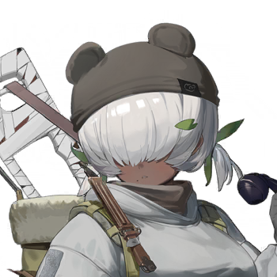
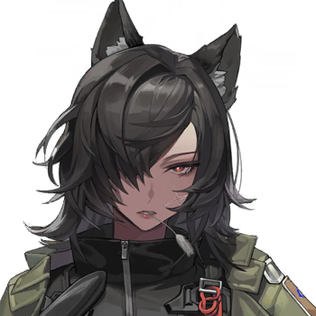

Back to main page :
[Main page]
[Story List]
[Next Chapter]
0-3 Prologue
Characters
Warrant Officer
Karula
Lida
Pola

Baline
Valena
Elena
Lisa

Hannah
Claudia
Summary
The security personnel finally arrived at the landing site, but were spooked by the ferocious vice leader of the scavengers and had to flee. Meanwhile, Valena and the 8th Squad, having guessed the true nature of the scavenger group, boarded the "Bluebird" recovery vehicle and rushed to the site at full speed.
[Meanwhile]
[Some distance away from the landing site]
“Vice Master” (Pola)
?
Scavenger
Second Boss! Second Boss! This new one that just dropped is a "noisy kiln"!
“Vice Master”
Oh! A noisy kiln! What good stuff did you find?
Scavenger
We can't break it open! Too many flags, their pipes are too hard! Several of our brothers got laid out!
“Vice Master”
So you didn't even break it open. That just means you guys backed down when hitting a hard spot.
“Vice Master”
Send a slick tongue to talk it out, leave some money, drop a note, and just make friends.
“Vice Master”
haven't had meat for days, I don't feel like moving...
Scavenger
Good grief, we're risking our lives here, and you just want to eat the spoils on a silver platter!
Scavenger
T-talking it out won't work. The target is completely an outsider, they don't know the rules at all! The other side said...
“Vice Master”
Ah, said what.
Scavenger
Said they are going to pave a road right through our territory and plant their own flag!
“Vice Master”
Ah? What?!
Scavenger
To crush our gang's prestige, and deflate the Great Hawks' spirit...
“Vice Master”
D-damn it! They don’t even respect us, their Vice Master! How can we survive if we don’t pull off this heist?
“Vice Master”
Where is my axe?
[Narrator]
[A few minutes later…]
Pola
R-Robbery! The cargo belongs to the public, but your lives are your own! Hand over all your films(Tapes) right now!
Karula
What a rude bandit! I will never hand over my treasured films to you!
Lida
It seems the "films" they're talking about aren't the same thing, are they?
Preparatory Team Security Personnel (Baline)
I see the Team Leader's landing capsule!
Valena (Radio)
Report the exact coordinates and landmarks!
Preparatory Team Security Personnel
Well, as for the landmarks...
Karula
Ah, finally someone’s come to rescue us—we're over here!
Pola
Where did this meddler come from? Mind your own business!
Preparatory Team Security Personnel
H-hang in there, you guys, I'm going to call for reinforcements!
Karula
These rescuers are way too unreliable!
[Meanwhile, on the side of the 8th Squad heading to the rescue...]
Valena
The security personnel recruited by the Preparatory Team have found the wrecked landing capsule!
Elena
Did they check the capsule? Did they see the Team Leader?
Valena
No, they were routed by a fierce band of scavengers.
Elena
Then, what’s the exact location of the landing capsule?
Valena
They were too panicked and didn't have time to record it.
Lisa
Hey, hey, hey, aren't these guys a bit too amateurish?
Valena
The sound of machine-gun fire! Are the scavengers raiding the landing capsule really that well-equipped?!
Elena
This area is very close to the "Postman" gang's nest. Those guys aren't ordinary scavengers.
Lisa
Forget machine guns, they even have automatic grenade launchers!
Valena
The Warrant Officer and Lida don't have a single combatant by their side right now! We must find their landing capsule as soon as possible!
Hannah
"Spark"!
Valena
"Carousel"!
Hannah
I am Sergeant Major Hannah of the Cosmodrome Tactical Unit—was it your 8th Squad that requested the recovery vehicle?
Valena
To be precise, I requested it.
Hannah
This "Bluebird" has the highest performance and is in the best condition within the recovery convoy.
Hannah
Its supplies are the most complete... So, what precious cargo could possibly require the 8th Squad to search for it?
Valena
Three living people.
Hannah
Then it’s no wonder. I wish the passengers you are looking for a safe extraction.
Hannah
I need to continue tracking other landing capsules... I'm afraid by the time I find them, they'll probably be completely looted by scavengers.
Valena
Can scavengers actually pry open the capsule doors?
Hannah
They know how to open every hatch inside and outside the landing capsule, faster than a butcher butchering a sheep.
Valena
Then we can’t waste any more time!
Valena
Utilize this vehicle at maximum speed to rush to the landing site!
Elena
Understood.
Hannah
Copy that.
Claudia
Comrade Elena, this vehicle’s armor isn’t very good. Are we all going to get on it?
Elena
Stay sharp, and be ready to jump off at any moment.
[Story List]
[Next Chapter]